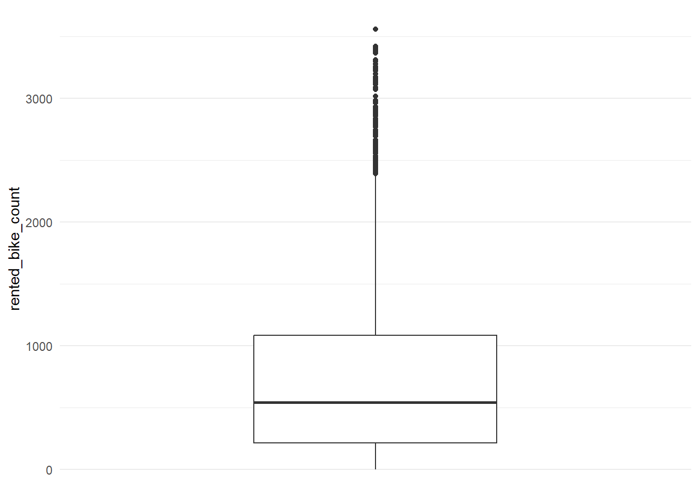
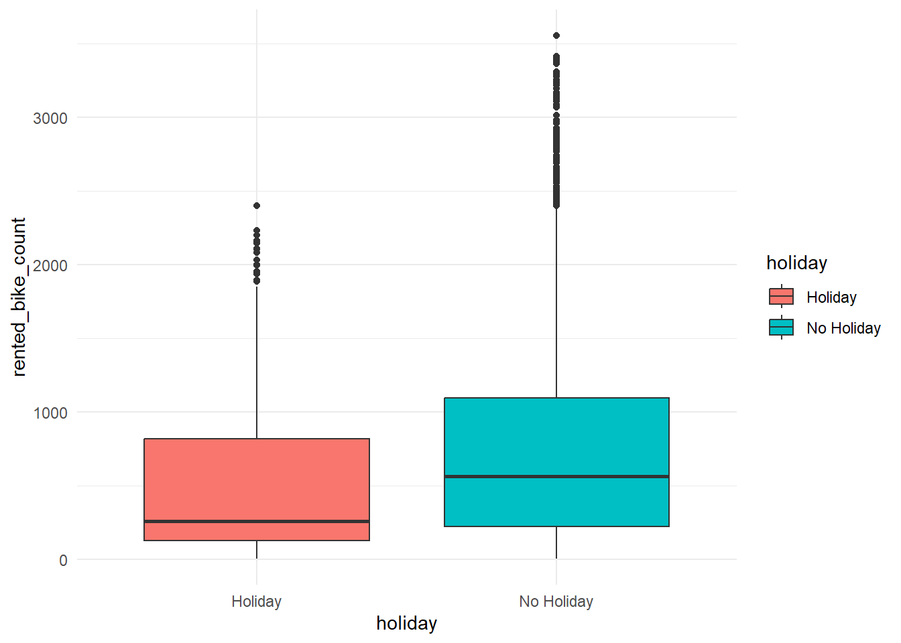
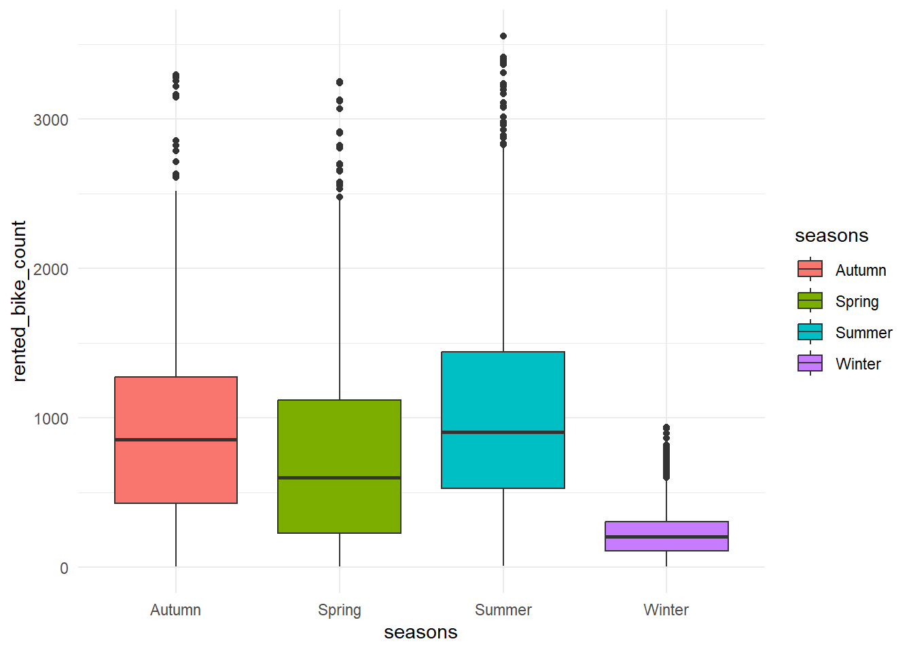
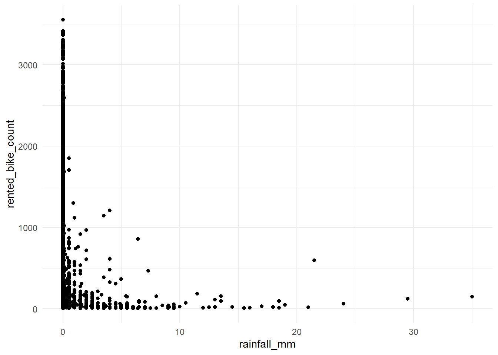
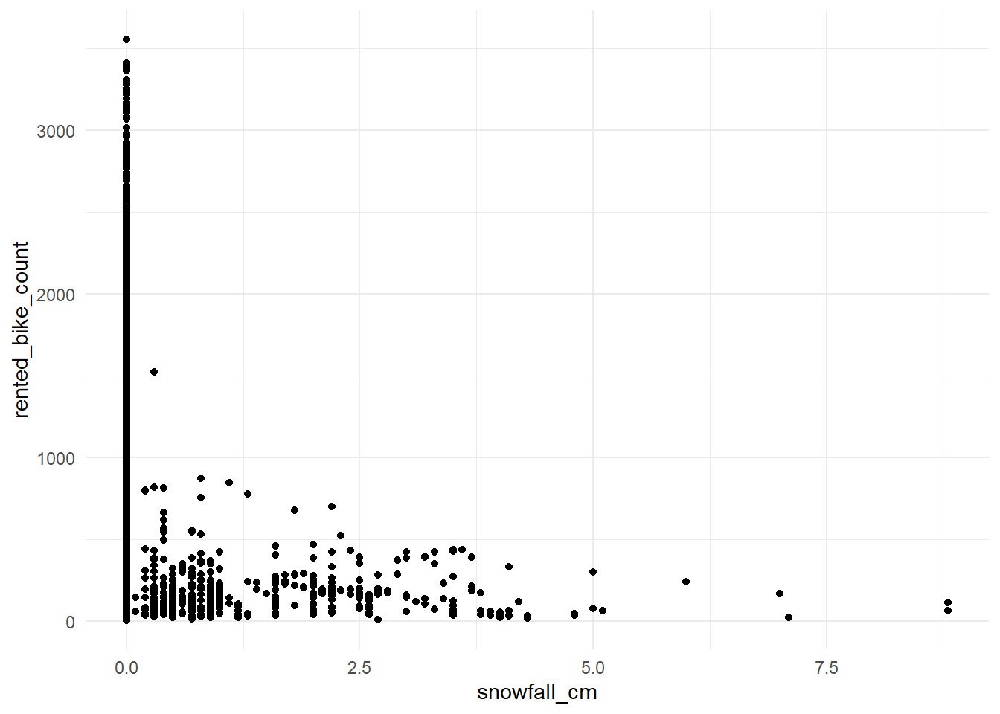
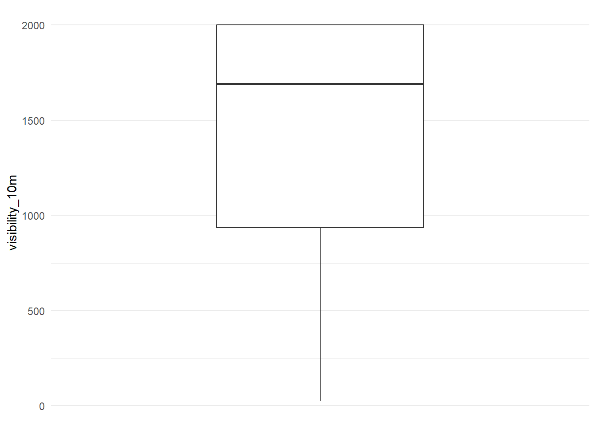
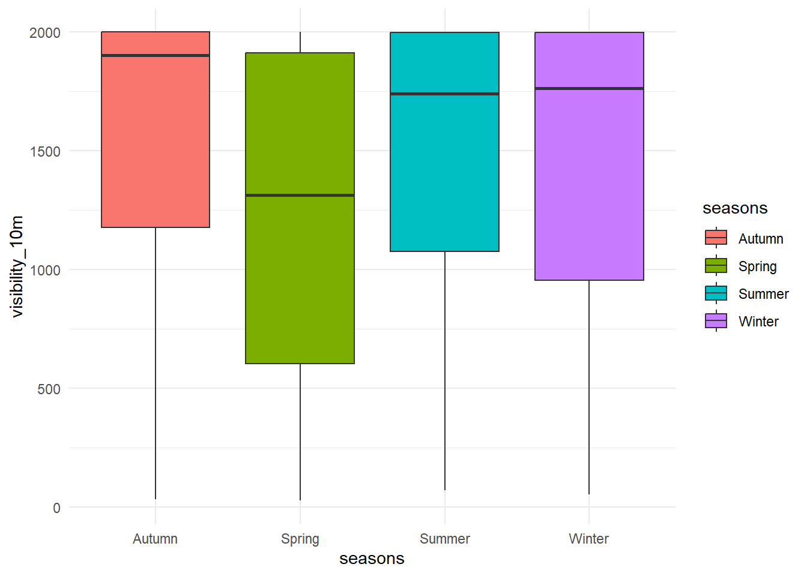
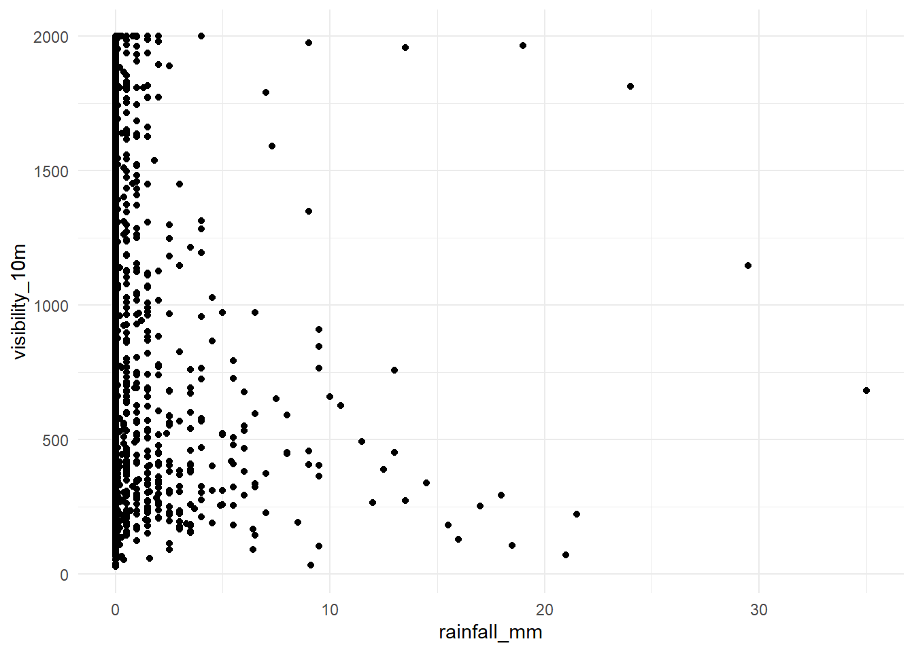
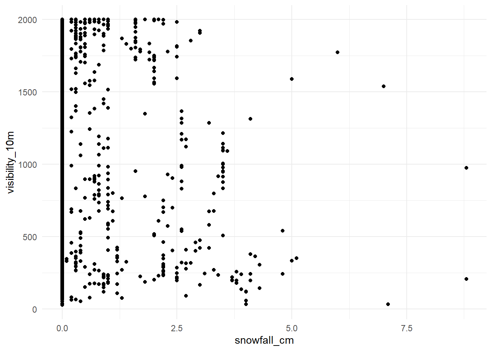

library(tidyverse)
library(lubridate)
library(ggplot2)
library(tidymodels)ST 558 - HW 9
Read-in Data
- Import data from a local copy of the CSV (downloaded from URL, saved to repo).
- Convert to R-compatible variable names using the
janitorpackage - Store the data as a basic tibble (not the spec_tbl_df)
seoul <- read_csv("SeoulBikeData.csv", locale=locale(encoding="latin1"))Rows: 8760 Columns: 14
── Column specification ────────────────────────────────────────────────────────
Delimiter: ","
chr (4): Date, Seasons, Holiday, Functioning Day
dbl (10): Rented Bike Count, Hour, Temperature(°C), Humidity(%), Wind speed ...
ℹ Use `spec()` to retrieve the full column specification for this data.
ℹ Specify the column types or set `show_col_types = FALSE` to quiet this message.seoul <- janitor::clean_names(as_tibble(seoul))EDA
First glance:
str(seoul)tibble [8,760 × 14] (S3: tbl_df/tbl/data.frame)
$ date : chr [1:8760] "01/12/2017" "01/12/2017" "01/12/2017" "01/12/2017" ...
$ rented_bike_count : num [1:8760] 254 204 173 107 78 100 181 460 930 490 ...
$ hour : num [1:8760] 0 1 2 3 4 5 6 7 8 9 ...
$ temperature_c : num [1:8760] -5.2 -5.5 -6 -6.2 -6 -6.4 -6.6 -7.4 -7.6 -6.5 ...
$ humidity_percent : num [1:8760] 37 38 39 40 36 37 35 38 37 27 ...
$ wind_speed_m_s : num [1:8760] 2.2 0.8 1 0.9 2.3 1.5 1.3 0.9 1.1 0.5 ...
$ visibility_10m : num [1:8760] 2000 2000 2000 2000 2000 ...
$ dew_point_temperature_c: num [1:8760] -17.6 -17.6 -17.7 -17.6 -18.6 -18.7 -19.5 -19.3 -19.8 -22.4 ...
$ solar_radiation_mj_m2 : num [1:8760] 0 0 0 0 0 0 0 0 0.01 0.23 ...
$ rainfall_mm : num [1:8760] 0 0 0 0 0 0 0 0 0 0 ...
$ snowfall_cm : num [1:8760] 0 0 0 0 0 0 0 0 0 0 ...
$ seasons : chr [1:8760] "Winter" "Winter" "Winter" "Winter" ...
$ holiday : chr [1:8760] "No Holiday" "No Holiday" "No Holiday" "No Holiday" ...
$ functioning_day : chr [1:8760] "Yes" "Yes" "Yes" "Yes" ...Date Data
Covert the character date field to a true date data type using lubridate package.
seoul <- seoul |>
mutate(date_num = dmy(date))
#check the derivation
class(seoul$date_num)[1] "Date"head(seoul |> select(date,date_num))# A tibble: 6 × 2
date date_num
<chr> <date>
1 01/12/2017 2017-12-01
2 01/12/2017 2017-12-01
3 01/12/2017 2017-12-01
4 01/12/2017 2017-12-01
5 01/12/2017 2017-12-01
6 01/12/2017 2017-12-01Review range and missingness:
seoul |> select(date_num) |>
summarize(min = min(date_num),
max = max(date_num))# A tibble: 1 × 2
min max
<date> <date>
1 2017-12-01 2018-11-30cat("Records with NA: ", nrow(seoul |> filter(is.na(date_num))))Records with NA: 0Character Data
Review frequencies and create factors as needed.
table(seoul$seasons, useNA= "ifany")
Autumn Spring Summer Winter
2184 2208 2208 2160 table(seoul$holiday, useNA= "ifany")
Holiday No Holiday
432 8328 table(seoul$functioning_day, useNA= "ifany")
No Yes
295 8465 Remarks:
- All 3 variables should be treated as categorical factors (update below)
- No concerns about missingness
- Check for overlap between holiday and non-functioning days
xtabs(~ holiday + functioning_day, data=seoul) functioning_day
holiday No Yes
Holiday 24 408
No Holiday 271 8057Proceed with factor assignments. Also drop character date, since that is no longer needed.
seoul <- seoul |>
mutate(seasons = as.factor(seasons),
holiday = as.factor(holiday),
functioning_day = as.factor(functioning_day)) |>
select(-date) |> select(date_num, everything())
str(seoul |> select(seasons, holiday, functioning_day))tibble [8,760 × 3] (S3: tbl_df/tbl/data.frame)
$ seasons : Factor w/ 4 levels "Autumn","Spring",..: 4 4 4 4 4 4 4 4 4 4 ...
$ holiday : Factor w/ 2 levels "Holiday","No Holiday": 2 2 2 2 2 2 2 2 2 2 ...
$ functioning_day: Factor w/ 2 levels "No","Yes": 2 2 2 2 2 2 2 2 2 2 ...Numeric Data
Review basic summary stats for all numeric data using the psych package:
psych::describe(seoul |> select(where(is.numeric)) ) |>
select(n, min, median, max, range, mean, sd) n min median max range mean sd
rented_bike_count 8760 0.0 504.50 3556.00 3556.00 704.60 645.00
hour 8760 0.0 11.50 23.00 23.00 11.50 6.92
temperature_c 8760 -17.8 13.70 39.40 57.20 12.88 11.94
humidity_percent 8760 0.0 57.00 98.00 98.00 58.23 20.36
wind_speed_m_s 8760 0.0 1.50 7.40 7.40 1.72 1.04
visibility_10m 8760 27.0 1698.00 2000.00 1973.00 1436.83 608.30
dew_point_temperature_c 8760 -30.6 5.10 27.20 57.80 4.07 13.06
solar_radiation_mj_m2 8760 0.0 0.01 3.52 3.52 0.57 0.87
rainfall_mm 8760 0.0 0.00 35.00 35.00 0.15 1.13
snowfall_cm 8760 0.0 0.00 8.80 8.80 0.08 0.44Remarks:
- Most ranges seem plausible, but a few variables have suspiciously wide ranges
- Use graphical summaries to further investigate the suspicious variables:
rented_bike_countandvisibility_10m - Check for association between rental counts and non-functioning days
psych::describe(seoul |> filter(functioning_day=="No") |> select(rented_bike_count) ) |>
select(n, min, median, max, range, mean, sd) n min median max range mean sd
rented_bike_count 295 0 0 0 0 0 0Absolutely no rentals occur on the non-functioning days. Create a version of the data that contains functioning days only to use moving forward.
seoul_fn <- seoul |> filter(functioning_day=="Yes")Rental Count
#boxplots x categories
gxd <- ggplot(seoul_fn) + scale_x_discrete() + theme_minimal()
gxd + geom_boxplot(aes(y=rented_bike_count))
gxd + geom_boxplot(aes(x= holiday, y=rented_bike_count, fill=holiday))
gxd + geom_boxplot(aes(x= seasons, y=rented_bike_count, fill=seasons))
#scatterplot with rain + snow
ggplot(seoul_fn) + theme_minimal() +
geom_point(aes(x=rainfall_mm, y = rented_bike_count))
ggplot(seoul_fn) + theme_minimal() +
geom_point(aes(x=snowfall_cm, y = rented_bike_count))
Remarks:
- The high counts appear to be legitimate data (as opposed to a data entry error). While these high counts are certainly less frequent, they happen enough and no holiday or season accounts for all of the outliers.
- From the boxplot x seasons, we see that winter has a much different distribution of bike rentcals compared to the other seasons.
- Scatter plots x precipitation show a steep drop in the number of rentals with any notable rain/snow fall. Check correlations below.
cat("Correlation Rentals x Rainfall = ",
cor(seoul_fn |> select(rented_bike_count,rainfall_mm))[1,2])Correlation Rentals x Rainfall = -0.1286261cat("Correlation Rentals x Snowfall = ",
cor(seoul_fn |> select(rented_bike_count,snowfall_cm))[1,2])Correlation Rentals x Snowfall = -0.1516108Visibility
#boxplots x categories
gxd + geom_boxplot(aes(y=visibility_10m))
gxd + geom_boxplot(aes(x= seasons, y=visibility_10m, fill=seasons))
#scatterplot with rain + snow
ggplot(seoul_fn) + theme_minimal() +
geom_point(aes(x=rainfall_mm, y = visibility_10m))
ggplot(seoul_fn) + theme_minimal() +
geom_point(aes(x=snowfall_cm, y = visibility_10m))
Remarks:
- High-end visibility is actually the norm with low-end visibility being less frequent.
- From the boxplot x season, we see that visibility was fairly consistent across seasons.
- Scatter plots of visibility with rainfall and snowfall are tough to interpret since the days with zero precipitation include the full spectrum of visibility. Check correlations below
cat("Correlation Visibility x Rainfall = ",
cor(seoul_fn |> select(visibility_10m, rainfall_mm))[1,2])Correlation Visibility x Rainfall = -0.1703518cat("Correlation Visibility x Snowfall = ",
cor(seoul_fn |> select(visibility_10m, snowfall_cm))[1,2])Correlation Visibility x Snowfall = -0.1228597Data Restructure
seoul_new <- seoul_fn |>
group_by(date_num, seasons, holiday) |>
summarize(bike_count = sum(rented_bike_count),
rainfall = sum(rainfall_mm),
snowfall = sum(snowfall_cm),
temp = mean(temperature_c),
humidity = mean(humidity_percent),
windspeed = mean(wind_speed_m_s),
visibility = mean(visibility_10m),
dewpoint = mean(dew_point_temperature_c),
solar = mean(solar_radiation_mj_m2)) |>
ungroup()`summarise()` has regrouped the output.
ℹ Summaries were computed grouped by date_num, seasons, and holiday.
ℹ Output is grouped by date_num and seasons.
ℹ Use `summarise(.groups = "drop_last")` to silence this message.
ℹ Use `summarise(.by = c(date_num, seasons, holiday))` for per-operation
grouping (`?dplyr::dplyr_by`) instead.Categorical Frequencies
table(seoul_new$seasons)
Autumn Spring Summer Winter
81 90 92 90 table(seoul_new$holiday)
Holiday No Holiday
17 336 Numeric Summaries
psych::describe(seoul_new |> select(where(is.numeric)) ) |>
select(n, min, median, max, range, mean, sd) n min median max range mean sd
bike_count 353 977.00 18563.00 36149.00 35172.00 17485.31 9937.16
rainfall 353 0.00 0.00 95.50 95.50 3.58 11.79
snowfall 353 0.00 0.00 78.70 78.70 1.86 8.80
temp 353 -14.74 13.74 33.74 48.48 12.78 11.72
humidity 353 22.25 57.17 95.88 73.62 58.17 14.87
windspeed 353 0.66 1.66 4.00 3.34 1.73 0.60
visibility 353 214.29 1557.75 2000.00 1785.71 1434.01 491.16
dewpoint 353 -27.75 4.61 25.04 52.79 3.95 12.99
solar 353 0.03 0.56 1.22 1.19 0.57 0.32Split for Training
Split 75:25 for training:test, stratified by seasons.
set.seed(789)
seoul_split <- rsample::initial_split(seoul_new, prop = 0.75, strata = "seasons")
seoul_train <- training(seoul_split)
seoul_test <- testing(seoul_split)MLR Fit
Data prep
Additional data transformations are needed…
Find Standards
Calculate mean and standard deviation for all numeric x-variables in the training dataset. These will be used to standardize each variable in both training and testing.
Results are stored in the standards matrix as [“mean”, ] and [“sd”, ] row positions, with each variable name as the column positions.
standards <- apply(X = seoul_train |> select(where(is.numeric)),
MARGIN = 2,
FUN = function(x){
temp <- c(mean(x), sd(x))
names(temp) <- c("mean", "sd")
temp
})
standards bike_count rainfall snowfall temp humidity windspeed visibility
mean 17228.16 3.722053 1.779087 12.63708 57.96984 1.7443329 1459.1398
sd 10002.71 12.064558 8.644103 11.86834 15.38574 0.6067732 484.1313
dewpoint solar
mean 3.762894 0.5636731
sd 13.302015 0.3131470Standardize
Standardize all numeric x-variables on the dataset: (x - mean(x_train)) / sd(x_train). Store results in new datasets for quick spot-check qc.
Do not standardize the y-variable (bike_count).
#Initiate Standardized Datasets
seoul_trainz <- seoul_train
seoul_testz <- seoul_test
#Predictors to loop over
xvars <- c("rainfall", "snowfall", "temp", "humidity", "windspeed", "visibility", "dewpoint", "solar")
for (i in 1:length(xvars)){
x <- xvars[i]
#Training Data
seoul_trainz[,x] <- (seoul_trainz[,x] - standards["mean", x])/standards["sd", x]
#Testing Data
seoul_testz[,x] <- (seoul_testz[,x] - standards["mean", x])/standards["sd", x]
}DOW Derived
Derive day of week variable from date (factor with 1=Sunday, …, 7 = Saturday)
seoul_trainz <- seoul_trainz |>
mutate(dow = wday(date_num)) |>
select(date_num, dow, everything())
seoul_testz <- seoul_testz |>
mutate(dow = wday(date_num)) |>
select(date_num, dow, everything())Three Models
Three proposed models:
- Main effects model ( ~ seasons + holiday + dow + allX)
- Interaction model (~ mod1 + seasons*holiday + seasons*temp + temp*rainfall)
- Quadratic model (~ mod2 + temp^2 + humidity^2)
Fit models using training data:
#Model 1:
mod1 <- lm(bike_count ~ seasons + holiday + dow + rainfall + snowfall + temp +
humidity + windspeed + visibility + dewpoint + solar,
data = seoul_trainz)
mod1
Call:
lm(formula = bike_count ~ seasons + holiday + dow + rainfall +
snowfall + temp + humidity + windspeed + visibility + dewpoint +
solar, data = seoul_trainz)
Coefficients:
(Intercept) seasonsSpring seasonsSummer seasonsWinter
17348.52 -5163.73 -3681.74 -8677.96
holidayNo Holiday dow rainfall snowfall
4203.42 98.12 -1826.35 -322.99
temp humidity windspeed visibility
-7287.37 -3684.25 -992.88 160.01
dewpoint solar
12849.29 3772.97 #Model 2:
mod2 <- lm(bike_count ~ seasons + holiday + dow + rainfall + snowfall + temp +
humidity + windspeed + visibility + dewpoint + solar +
seasons:holiday + seasons:temp + temp:rainfall,
data = seoul_trainz)
mod2
Call:
lm(formula = bike_count ~ seasons + holiday + dow + rainfall +
snowfall + temp + humidity + windspeed + visibility + dewpoint +
solar + seasons:holiday + seasons:temp + temp:rainfall, data = seoul_trainz)
Coefficients:
(Intercept) seasonsSpring
16538.9 -5534.8
seasonsSummer seasonsWinter
16524.7 -6505.7
holidayNo Holiday dow
4506.1 201.3
rainfall snowfall
-2279.6 -210.2
temp humidity
-5563.6 -3880.9
windspeed visibility
-675.2 318.1
dewpoint solar
12153.2 3210.5
seasonsSpring:holidayNo Holiday seasonsSummer:holidayNo Holiday
948.4 -717.9
seasonsWinter:holidayNo Holiday seasonsSpring:temp
-1922.6 5112.7
seasonsSummer:temp seasonsWinter:temp
-16732.6 -293.2
rainfall:temp
-464.2 #Model 3:
mod3 <- lm(bike_count ~ seasons + holiday + dow + rainfall + snowfall + temp +
humidity + windspeed + visibility + dewpoint + solar +
seasons:holiday + seasons:temp + temp:rainfall +
I(temp^2) + I(humidity^2),
data = seoul_trainz)
mod3
Call:
lm(formula = bike_count ~ seasons + holiday + dow + rainfall +
snowfall + temp + humidity + windspeed + visibility + dewpoint +
solar + seasons:holiday + seasons:temp + temp:rainfall +
I(temp^2) + I(humidity^2), data = seoul_trainz)
Coefficients:
(Intercept) seasonsSpring
16810.4 -4700.9
seasonsSummer seasonsWinter
15788.8 -8322.9
holidayNo Holiday dow
4755.3 202.8
rainfall snowfall
-2053.7 -241.7
temp humidity
-1261.4 -2601.6
windspeed visibility
-657.0 310.0
dewpoint solar
7439.3 2984.0
I(temp^2) I(humidity^2)
-784.0 -445.5
seasonsSpring:holidayNo Holiday seasonsSummer:holidayNo Holiday
238.4 -787.8
seasonsWinter:holidayNo Holiday seasonsSpring:temp
-2439.1 4966.1
seasonsSummer:temp seasonsWinter:temp
-15347.7 -3433.8
rainfall:temp
-481.7 Test Set Error Assessment
Using RMSE metric and the standardized test data (seoul_testz)
#Model 1:
tse1 <- yardstick::rmse_vec(seoul_testz$bike_count,
predict(mod1, newdata=seoul_testz) )
tse1[1] 3973.755#Model 2:
tse2 <- yardstick::rmse_vec(seoul_testz$bike_count,
predict(mod2, newdata=seoul_testz) )
tse2[1] 2852.922#Model 3:
tse3 <- yardstick::rmse_vec(seoul_testz$bike_count,
predict(mod3, newdata=seoul_testz) )
tse3[1] 2817.623Model 3 has the smallest RMSE (2817.623). Proceed with Model 3 for the formal analysis.
Final Model
Find standards for the full dataset (seoul_new).
standards_final <- apply(X = seoul_new |> select(where(is.numeric)),
MARGIN = 2,
FUN = function(x){
temp <- c(mean(x), sd(x))
names(temp) <- c("mean", "sd")
temp
})
standards_final bike_count rainfall snowfall temp humidity windspeed visibility
mean 17485.309 3.575921 1.862890 12.77584 58.16627 1.7261484 1434.0137
sd 9937.165 11.789868 8.804413 11.71840 14.86552 0.5972809 491.1561
dewpoint solar
mean 3.954165 0.5677319
sd 12.992939 0.3161252Apply the final standardization to the full dataset. Use the same xvars list from before, and again, create a new dataset for quick spot-check of calculations.
#Initialize new dataset
seoul_newz <- seoul_new
#Loop
print(xvars)[1] "rainfall" "snowfall" "temp" "humidity" "windspeed"
[6] "visibility" "dewpoint" "solar" for (i in 1:length(xvars)){
x <- xvars[i]
seoul_newz[,x] <- (seoul_newz[,x] - standards_final["mean", x])/standards_final["sd", x]
}Add day-of-week variable.
seoul_newz <- seoul_newz |>
mutate(dow = wday(date_num)) |>
select(date_num, dow, everything())Fit model 3 to the standardized full dataset.
mod_final <- lm(bike_count ~ seasons + holiday + dow + rainfall + snowfall + temp +
humidity + windspeed + visibility + dewpoint + solar +
seasons:holiday + seasons:temp + temp:rainfall +
I(temp^2) + I(humidity^2),
data = seoul_newz)Coefficient estimates:
mod_final
Call:
lm(formula = bike_count ~ seasons + holiday + dow + rainfall +
snowfall + temp + humidity + windspeed + visibility + dewpoint +
solar + seasons:holiday + seasons:temp + temp:rainfall +
I(temp^2) + I(humidity^2), data = seoul_newz)
Coefficients:
(Intercept) seasonsSpring
17148.9 -1939.6
seasonsSummer seasonsWinter
15360.8 -9586.2
holidayNo Holiday dow
4806.3 181.5
rainfall snowfall
-2084.5 -153.6
temp humidity
-2248.6 -2981.5
windspeed visibility
-428.1 209.6
dewpoint solar
8842.2 2991.8
I(temp^2) I(humidity^2)
-1365.4 -358.1
seasonsSpring:holidayNo Holiday seasonsSummer:holidayNo Holiday
-2782.6 -1758.5
seasonsWinter:holidayNo Holiday seasonsSpring:temp
-2500.9 5120.9
seasonsSummer:temp seasonsWinter:temp
-14070.5 -5305.8
rainfall:temp
-488.5